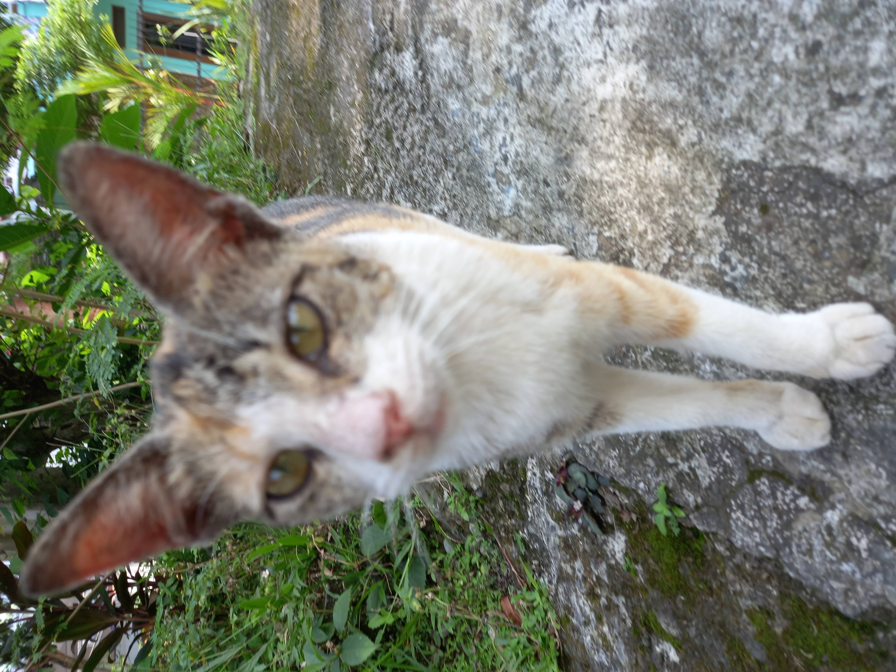
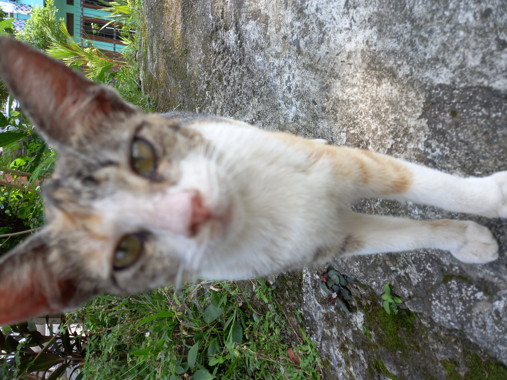
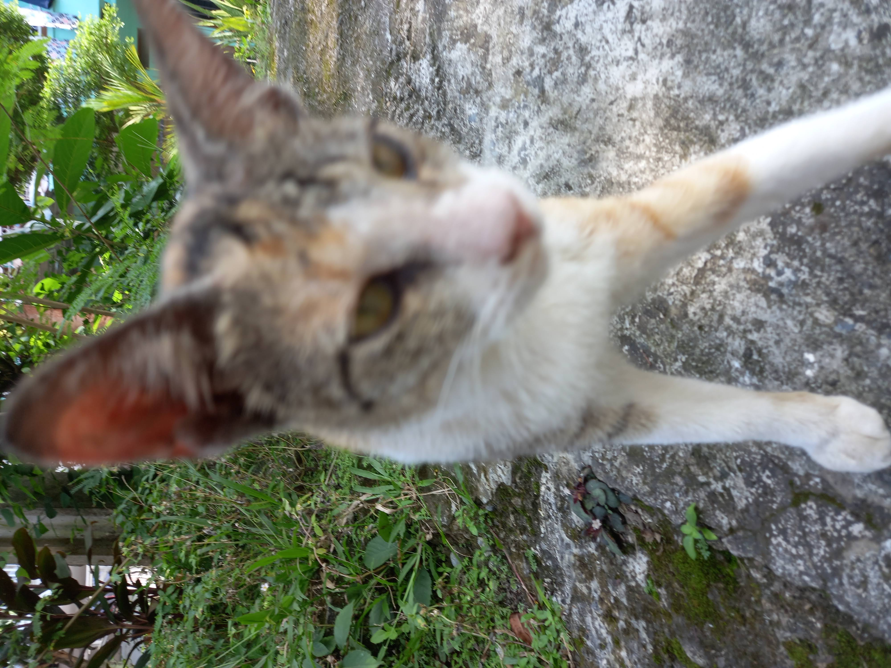
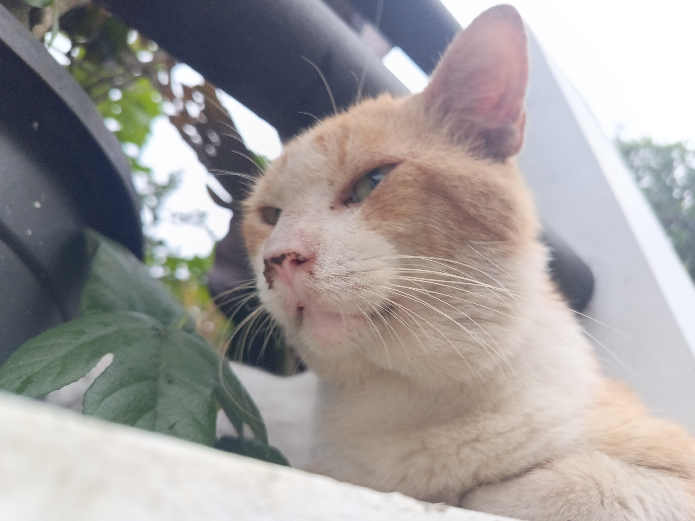
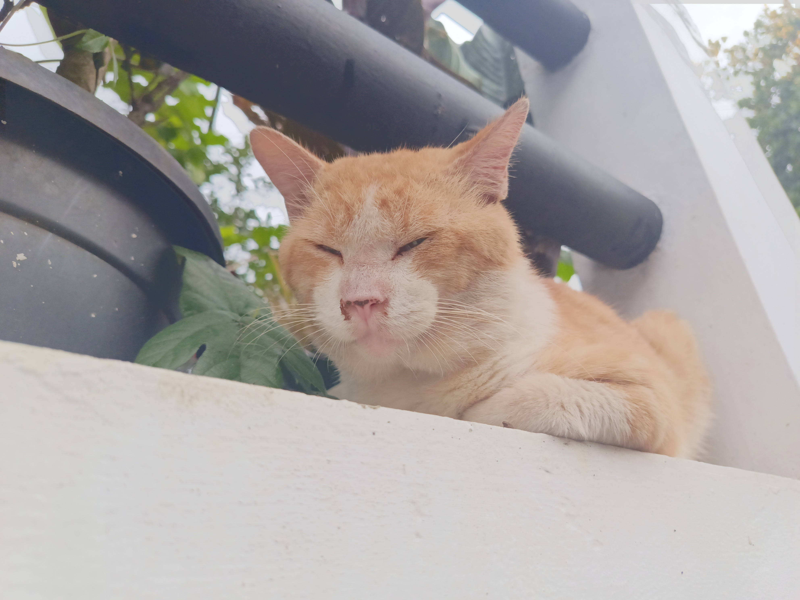
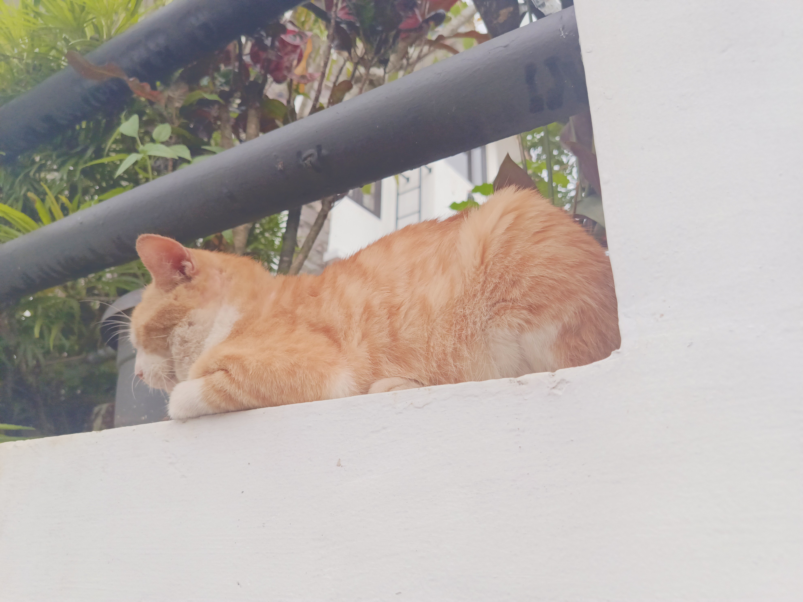
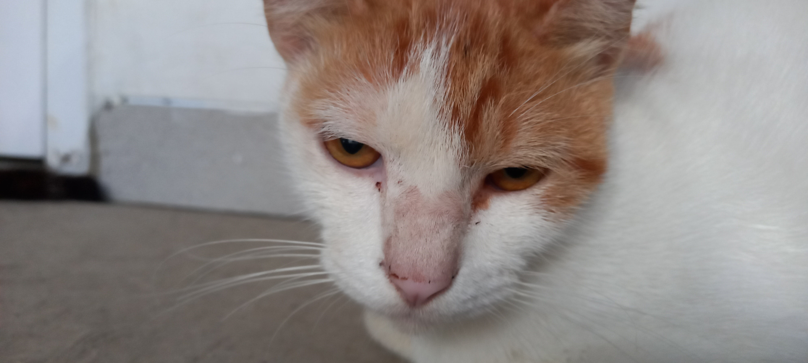
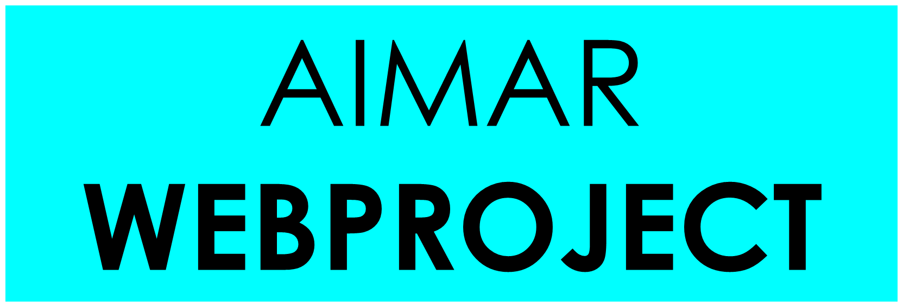

Semua media kucing saya
Media kucing Ikrason
  Ukuran media kucing ini terlalu besar untuk didownload
Media kucing Baguette
  Download media kucing Baguette
Media kucing Viricossa


Download media kucing Viricossa
Hak Cipta © 2026 AimarWebProject. Dibuat oleh Aimar R.D. 